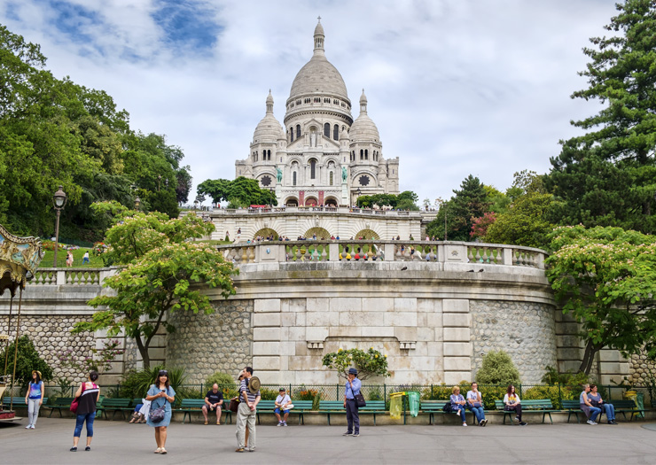
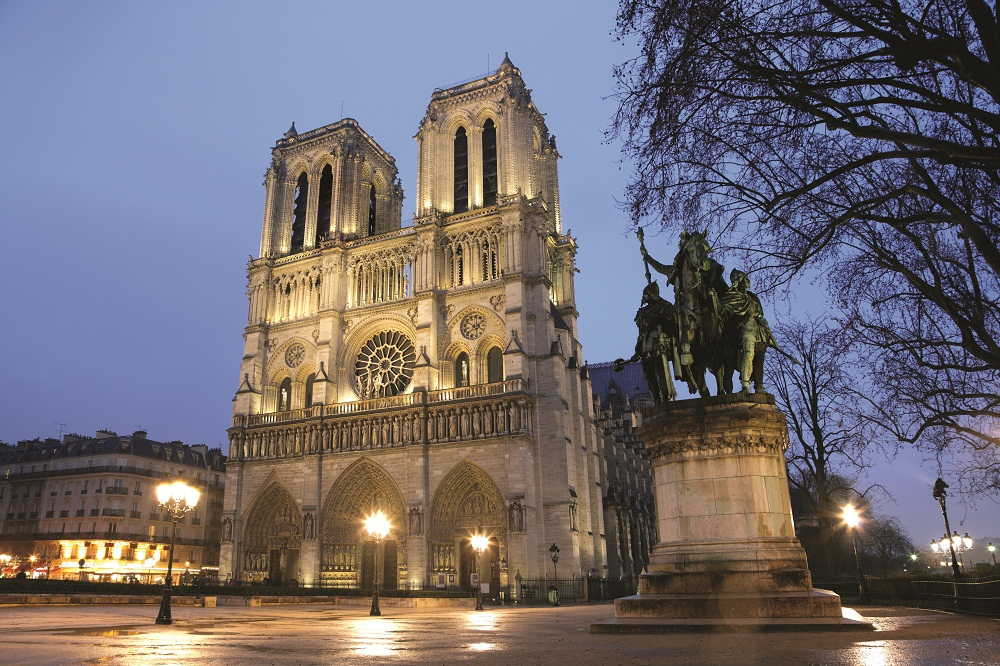
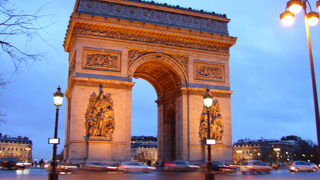
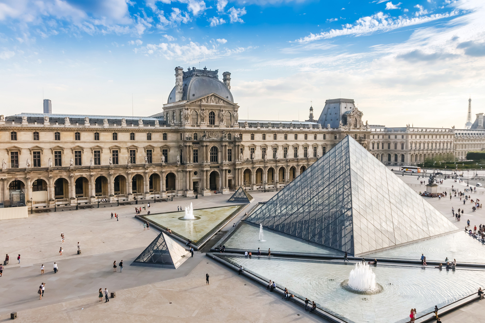

1- Torre Eiffel
Embora tenha sido inicialmente planejada para durar apenas 20 anos, hoje nem dá pra pensar na Cidade-Luz sem ela. Além de ser um dos pontos turísticos mais famosos do mundo, a Torre Eiffel, construída em 1889, é, também, o cartão-postal de Paris.

2- Bairro de Montmartre
Área histórica da cidade onde fica a Basílica de Sacré-Couer, famosa pelos seus cafés, estúdios e casas de shows.

3- Catedral de Notre-Dame
Famosa catedral gótica construída em 1163 e dedicada à Nossa Senhora (Notre Dame, em francês). Por conta do incêndio que acometeu a catedral em 2019, o monumento se encontra fechado para obras e ainda não tem data para reabertura. Mas isso não tira sua beleza, não! Surpreenda-se com a sua majestade mesmo que seja só a observando do lado de fora.

4-Arco do Triunfo
Construído por Napoleão Bonaparte em 1806, é uma homenagem às vitórias francesas e aos que morreram no campo de batalha. E tem mais! O Arco do Triunfo é, também, o cenário perfeito para muitas fotos icônicas

5- Museu do Louvre
É um dos maiores do mundo, ilustre por abrigar obras de arte importantes, como o retrato da Mona Lisa e a estátua da Vênus de Milo. Devido à sua estrutura gigantesca, exige pelo menos um dia inteiro de visita e mesmo assim muito provavelmente você não vai conseguir ver tudo o que queria.
